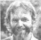

PHOTO BY RICHARD ALLEN
INTERVIEWING ALEX COMFORT ON "AGEISM"
Tom Ferguson
 Alex Comfort is one of the country's most distinguished geriatricians (a term, as many of you know, for a physician who specializes in the care of older people), and his book The Practice of Geriatric Psychiatry is a standard text in the field. Comfort, 61, received his medical training at England's Cambridge University. He first worked as a general practitioner, then studied pediatrics before becoming interested in gerontology (the study of the mechanisms of aging). "When I came to America," he recalls, "I found that you had excellent gerontology but very little geriatrics, so I returned to clinical practice. At first I was a mouse doctor, a scientist trying to modify the life span, but now I'm more interested in aging as a cultural and social phenomenon, and in the more immediate problems that older people face. "
FERGUSON: The central message of your fine book, A Good Age, seems to be that many of the so-called biological changes that occur as one grows older are in fact psychological, social, and political.
COMFORT: Yes, the greater part of the aging process is culturally determined. Our folklore imposes a set of roles on people, as they reach a certain chronological age, which characterize them as unintelligent, unemployable, crazy, ineducable, and incapable of sexual activity. Some social "credit points" can be gained by being nice to these subhuman individuals-again, according to the folklore-but most of them prefer the company of other aged unfortunates . . . whose main occupations are grumbling, reminiscing, religion, and attending the funerals of friends. In fact, however, older people as a group tend to be open-minded, bright, active, adaptable, and sexually active.
FERGUSON: In other words, our society encourages prejudice against older people.
COMFORT: Yes, and the name of that prejudice is "ageism". It's the notion that after having lived a certain number of years, people either cease to be people ... or cease to be the same people ... or become somehow inferior. Like racism, which it resembles, ageism is based on a combination of fear and folklore . . . and thus needs to be contradicted by facts and, when necessary, confrontation. It's the older people-the victims of this prejudice-who must stand up for themselves in order to combat it. And to do this, they've got to become a bit more bloody-minded.
FERGUSON: Bloody-minded?
COMFORT: It's a British Army term. There's no exact American equivalent, but it implies feistiness, orneriness, and heroic obstinacy in refusing to be put down ... whether it be by doctors, bureaucrats, people on the street, or your own children. Bloody-mindedness means standing up for your right to be yourself. The Welsh poet Dylan Thomas said, "Do not go gentle into that good night." Still less should a person go gentle into second-class citizenship, a rip-off nursing home, or a state of senior Uncle Tomism. Bloody-mindedness can be an index of self-respect, and those who are the most bloody-minded are often the most gentle and most principled . . . because-while standing up for themselves-they also speak for others who are more timid. They have the capacity to write letters, telephone the media, and kick shins when assailed by the forces of a faceless society. And if their minds are bloody enough, they become all but invincible, and inevitably die with their boots on.
FERGUSON: Can you give some examples of how older people should fight ageism with bloody-mindedness?
COMFORT: They should stand up for their dignity. And if others don't recognize it, they should put them down. They should react to people who use disparaging terms about seniors-such as "old biddy", "dirty old man", "old lady in tennis shoes", and "old crock"-the way black people react to the term "nigger". They should tell such individuals that they don't appreciate that kind of language. In most cases the speakers mean no harm, and a strong reaction can help them to see older individuals as people first and old only secondarily.
FERGUSON: You're suggesting that older folks become more militant, then.
COMFORT: I am. About 75% of what we call "old age" is actually a product of our institutions and attitudes. We should certainly work on understanding the remaining 25%-the biological aspects of aging-but it's the unnecessary 75% on which we can most profitably concentrate. Recognizing aging as primarily a social, cultural, and political phenomenon is an idea that hasn't occurred to most people . . . and coming to that understanding requires a big change.
FERGUSON: How is ageism political?
COMFORT: We have, for instance, laws that permit mandatory retirement . . . that deprive people of useful work and cut off their source of income just when they need it the most.
FERGUSON: You'd think that older people could form a powerful political block.
COMFORT: They could. Not only do they have the numbers, but they also often have an inestimably valuable weapon . . . free time. And while black activists needed a national drive to register their voters, most seniors are already registered. The sole reason that this massive political clout hasn't been brought to bear is that older voters tend to be isolated. The major seniors' organizations are nonprofit groups precluded from political campaigning. That leaves the Gray Panthers as the sole organization working for anti-ageist reforms. That group's brand of radicalism-which sees all people as ageless-is a novel one, even among professional radicals.
FERGUSON: Are there political groups or interests that would fight against the changes you're suggesting?
COMFORT: I really don't think so. The main obstacle is simple cultural inertia. There's no national interest that would be infringed ... no economic danger that would be incurred . . . and no person who would be hurt by a recognition of older people's rights. After all, we're all going to be senior citizens if we live long enough!
FERGUSON: In A Good Age you refer to some striking facts that debunk many of the common misconceptions about old people. Could you review a few of them?
COMFORT: Certainly, and I'll present both the commonly believed fables and the often surprising facts. Fable: Most old people live in institutions. Fact: Less than 4% of those over 65 are institutionalized. Fable: Most old people are confined to bed by illness. Fact: They are subject to fewer acute illnesses than are younger people... 1.3 per person a year compared with 2.1 for all ages. Now it's true that 81% of the people over 65 have some chronic health problem-compared with 54% of those below that age-but it's often nothing worse than short sight or hay fever. Fable: Old people live alone, abandoned by their children. Fact: About 80% of all people over 65 live with others, and 86% see at least one relative each week. Of oldsters who have children, 28% live in the same house, 33% live no more than ten minutes away, and 23% live within an hour's drive. Fable: Older workers can't do a decent job. Fact: They are typically more productive, have a lower rate of absenteeism, and have fewer injuries and accidents on the job. Fable: Old folks are past having sex. Fact: A large proportion of elders are fully able to enjoy sex. Fable: After 65 you can expect to become senile. Fact: Only about 1% of older people become senile, which is less than the proportion of the total population who go insane at earlier ages. Fable: Most handicaps common to older people are physical. Fact: About 75% of the handicaps related to oldness are social, cultural, and imaginary. The physical changes are trifling by comparison.
FERGUSON: Do you have any tips to help older people deal with health workers?
COMFORT: Don't put up with being addressed as "Granny" or "Pop". Point out that you have a name, and if they don't know it, they can damn well ask. You may have to be pretty bloody-minded at times. Get suspicious if you're told that ill health is what you should expect at your age. There's a story going around about a 104-year-old man with a stiff knee who was told he couldn't expect to be agile at his age. He replied, "But my other knee's 104, too, and it doesn't hurt." Try to find a physician who's actively involved in geriatrics. It can be very disconcerting for an older person to go into a hospital and have the doctor open up with, "Do you know what year it is? Do you know who's President?" We're only beginning to teach health workers not to do a mental status exam in that manner.
FERGUSON: How do you feel about nursing homes?
COMFORT: Old people used to fear the workhouse . . . now they fear nursing homes. Some primitive tribes kill off their aged and infirm citizens, but we often bury them alive in institutions. Commercial nursing homes can be operated by anyone with enough cash to start one . . . and the wages required to hire competent staff are a big drag on profits.
Furthermore, in the interest of the institution's convenience, all civil rights-to privacy, sexuality, making phone calls, keeping one's own money and even one's clothes-often have to be surrendered at the door. There are a number of excellent facilities where the care is genuine . . . but most old-age homes are expensive, abominable places where food, sanitation, medical help, and-above all-the treatment of the inhabitants as people are totally inadequate. Therefore, most seniors view the nursing home with terror and disgust. They rightly see it as the anesthetic room at the door of the funeral parlor.
FERGUSON: Will you talk a little about the physical changes of aging?
COMFORT: It's a tragedy that the mind, which is itself unchanged by aging, has to live with the transformation of the physical body. It's like an involuntary change of dress, because the "wearers" may well not feel "old" . . . since few people who aren't sick or depressed do. But in our culture we often forget that there's a young person-the same person-inside. Older people are, in fact, young individuals inhabiting old bodies and are, worse yet, confronted with the physical problems of reduced vigor, changing appearance, and possibly specific disabilities that may affect such things as sight and agility.
FERGUSON: What sexual changes can we expect as we grow older?
COMFORT: Aging does affect human sexuality to some degree. However-compared with, say, its impact on running ability- the changes are functionally minimal and actually tend toward greater, if less acute, satisfaction for both partners. In the absence of two disabilities-actual disease and the belief that "the old" are or should be asexual-both the needs and the capacity are lifelong. And even if actual intercourse is impaired, other sexual needs persist . . . including the desire for closeness, sensuality, and feeling valued as a man or woman.
FERGUSON: Is there any other advice you could offer about growing older?
COMFORT: I strongly urge that people begin making plans for their later years at around 45... during that period we call middle age. This time is now quite commonly marked by an identity crisis similar to that of adolescence. Some people react with depression or illness . . . some by thrashing about or by breakaway actions, such as taking a new job or new mate. But, as is the case with adolescence, some of this midlife turmoil can be put to constructive use. I would certainly encourage anyone planning to retire to have a second-string area of work in mind . . . not necessarily paid work, but something he or she really wants to do.
I would also encourage people to continue their education. Contrary to folklore, there's no change in the ability of healthy people to learn, up to and beyond the ninth decade of life. There's strong evidence that, as with other capacities, using the mind helps to preserve it.
FERGUSON: What are the other opportunities that growing older offers?
COMFORT: They're really no different from the opportunities present at any age. For me, the chance to travel and to explore other cultures-especially the good fortune I've had to live for a time in India and Dublin-have been very important. But other people would find their best options elsewhere. It all depends on the person. I think the ideal way to grow old would be to become so demonically occupied with doing something useful and enjoyable that it doesn't occur to you that you are old. It's these driven people who regard advanced age and death as annoying interruptions of their work-Picasso comes to mind as a good example-who tend to deal best with aging. The folks who impress me most are those who have so many interests that they're effectively unretirable. If they retire from one set of activities, it's only to do something else.
FERGUSON: You might very well be describing yourself. I don't imagine you'll have any problem with being retired.
COMFORT: No, nor you-and many of your readers-either. I imagine most of us will be doing our thing as long as we can make intelligible noises.
EDITOR'S NOTE: A Good Age by Alex Comfort is published by Fireside Books/Simon & Schuster (New York, 1978, $5.95). Why Survive? Being Old in America by Pulitzer Prize-winner Robert N. Butler, M.D. is published by Harper & Row (New York, 1975, $5.95). A subscription to the quarterly Gray Panther Network Newsletter is available for $5.00 a year from Gray Panthers, Dept. TMEN, 3635 Chestnut Street, Philadelphia, Pennsylvania 19104.
Dr. Tom Ferguson's quarterly journal, Medical Self-Care, is available for $15 per year from Medical Self-Care, Dept. TMEN, P.O. Box 717, Inverness, California 94937. A sample issue costs $4.00. Dr. Ferguson's book, also titled Medical Self-Care, can be ordered-for $8.95 plus 95 cents shipping and handling-from Mother's Bookshelf (restricted) , P.O. Box 70, Hendersonville, North Carolina 28791.
|
 |
|
|